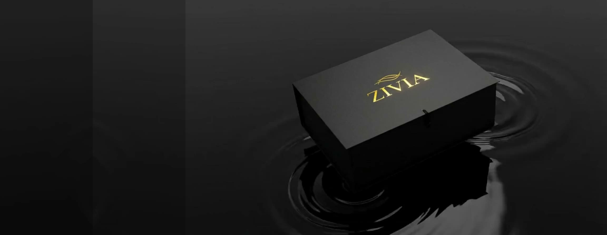
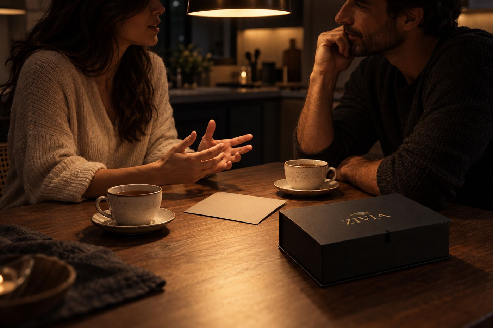
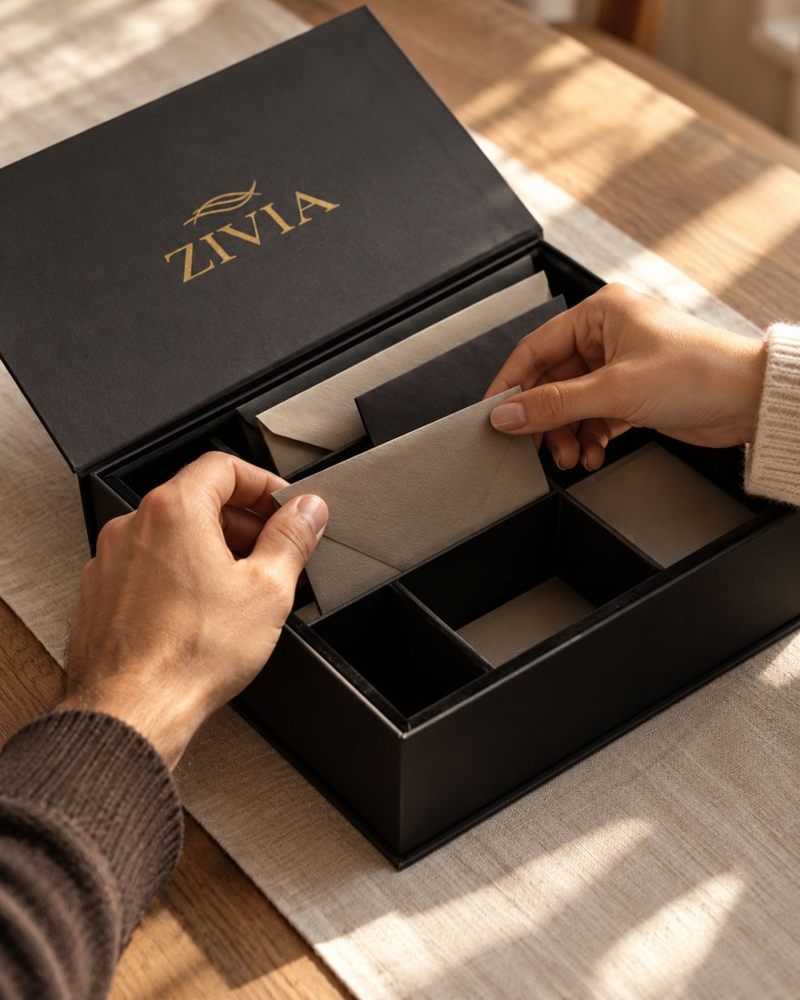
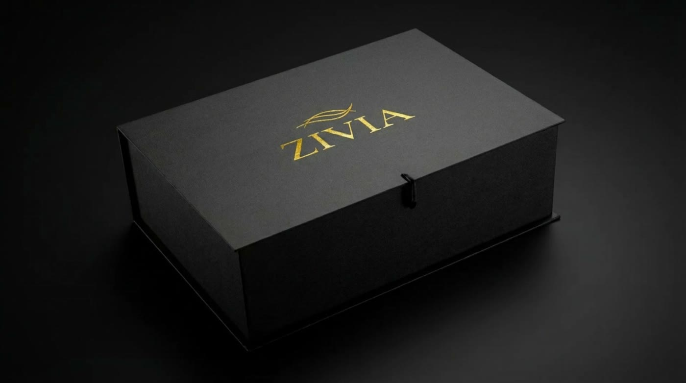
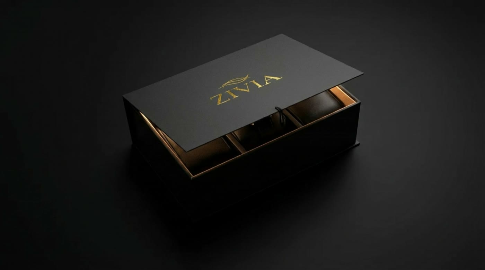

O extraordinário não está no que temos. Está no que vivemos.
A ZIVIA cria experiências guiadas para viver a dois, com espaço para presença, conversa e descoberta. A primeira edição é para casais.
Não é mais tempo junto. É mais encontro.
A ZIVIA não existe para culpar pelo tempo perdido. Existe para despertar a vontade de viver melhor o tempo que ainda temos juntos.

- Categoria
Design de Conexões Humanas
Experiências guiadas, desenhadas para favorecer presença, conversa e memória afetiva.
- O que enfrentamos
A vida automática
Não é o celular sozinho: é a convivência sem atenção, a relação no piloto automático.
- Promessa
Tempo comum. Conexão real.
Oportunidades de encontro que fazem sentido na vida de todo dia.
Vocês passaram a noite juntos. Quanto tempo foi realmente de vocês?
Estar perto não é o mesmo que estar presente.
Ainda há conversas que vocês não tiveram.
Uma experiência desenhada para viverem juntos.
Dez experiências. Um tempo que volta a ser de vocês.
Uma caixa física com experiências guiadas para viver a dois. Cada proposta abre espaço para uma conversa, um gesto ou uma descoberta. O que acontece em cada uma fica para a abertura.
- Experiências guiadas, sem precisar improvisar.
- No ritmo de vocês, com liberdade para adaptar ou pausar.
- Uma caixa pensada para que o encontro não fique para depois.

Criada para que o encontro não fique para depois.
A apresentação da caixa faz parte do convite. Mostramos o suficiente para vocês decidirem; o resto se descobre vivendo.



Vocês ainda têm primeiras vezes pela frente.
A edição inaugural da ZIVIA é para casais: 100 caixas comerciais nesta configuração de tamanho, itens e concepção, criadas para inaugurar essa experiência.

O que ainda vale saber.
O que é a ZIVIA?
A ZIVIA cria experiências guiadas para favorecer presença, conversa e descoberta. A primeira edição é para casais, por meio de uma caixa física com dez experiências.
O que vem na caixa?
A edição reúne dez experiências guiadas. As propostas específicas ficam preservadas para a descoberta durante o uso.
É indicada só para casais em dificuldade?
Não. A proposta é criar um tempo intencional a dois. A ZIVIA não é um serviço de terapia e não promete resolver problemas do relacionamento.
Onde vejo preço e condições?
Na página da edição para casais, junto com o que vem na caixa e o link de compra.
Qual foi a última vez que vocês fizeram algo juntos pela primeira vez?
Conheça a edição para casais e escolham um momento para viver juntos.
Cena ilustrativa.